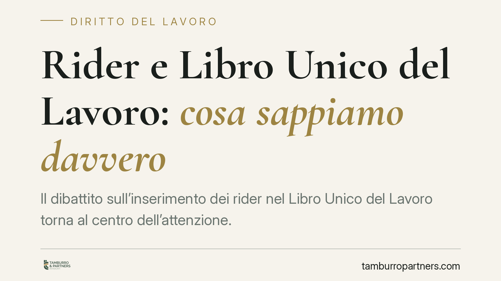

Rider e Libro Unico del Lavoro: cosa sappiamo davvero
Il dibattito sull'inserimento dei rider nel Libro Unico del Lavoro torna al centro dell'attenzione. Prima di parlare di nuovi obblighi occorre distinguere le figure coinvolte: subordinati, collaboratori etero-organizzati e autonomi genuini seguono regole diverse. Facciamo chiarezza sul quadro vigente e su ciò che resta, allo stato, solo annunciato.

Il punto di partenza: cos'è il Libro Unico del Lavoro
Il Libro Unico del Lavoro (LUL) è disciplinato dall'art. 39 del D.L. 25 giugno 2008, n. 112, convertito dalla legge 6 agosto 2008, n. 133. È il documento in cui il datore di lavoro registra i dati retributivi e contributivi dei propri lavoratori.
È importante partire da una precisazione tecnica: il LUL riguarda i lavoratori subordinati e le figure a essi assimilate, comprese le collaborazioni coordinate e continuative. Non ospita, di regola, i rapporti di lavoro autonomo genuino esercitato con partita IVA. Questo è il perimetro normativo attuale.
La disciplina dei rider nel D.Lgs. 81/2015
I rider non costituiscono una categoria unica. Il legislatore, con il D.Lgs. 15 giugno 2015, n. 81, ha costruito un sistema a più livelli.
L'art. 2 estende la disciplina del lavoro subordinato alle collaborazioni etero-organizzate, ossia le prestazioni personali e continuative le cui modalità di esecuzione sono organizzate dal committente, anche tramite piattaforma digitale. Quando ricorre questa fattispecie, il rider è trattato, ai fini di legge, come un lavoratore subordinato: da qui derivano anche gli adempimenti documentali connessi, LUL compreso.
Gli artt. 47-bis e seguenti, introdotti dal D.L. 3 settembre 2019, n. 101 (convertito dalla legge n. 128/2019), dettano invece tutele minime per i lavoratori autonomi che effettuano consegne tramite piattaforma: compenso, assicurazione INAIL, informazioni contrattuali. Si tratta di tutele di settore che non trasformano il rapporto in subordinato e non comportano, di per sé, iscrizione al LUL.
Cosa è vigente e cosa è solo annunciato
Allo stato non risulta pubblicata una fonte normativa — decreto, circolare o interpello con numero e data — che imponga in modo generalizzato, a partire dal 2026, l'iscrizione nel LUL dei rider autonomi con partita IVA o con prestazione occasionale. Un obbligo di questo tipo sarebbe, peraltro, difficilmente coerente con la natura documentale del LUL, pensato per i rapporti subordinati e assimilati.
Esistono ipotesi di intervento e orientamenti in discussione, ma vanno tenuti distinti da ciò che è già diritto vigente. Su questo consigliamo prudenza: fino alla pubblicazione di una fonte ufficiale con estremi verificabili, l'obbligo non può considerarsi certo.
Diverso è il caso dei rider che operano in regime di etero-organizzazione ex art. 2 D.Lgs. 81/2015: per essi gli adempimenti tipici del lavoro subordinato, incluso il LUL, discendono già dalla qualificazione del rapporto.
L'iscrizione al LUL non riqualifica il rapporto
Un punto merita attenzione. L'iscrizione di un lavoratore nel LUL è un adempimento documentale: non muta, di per sé, la natura sostanziale del rapporto. La qualificazione — autonomo, etero-organizzato, subordinato — dipende dalle modalità concrete della prestazione, non dalla registrazione contabile.
Va però considerato il risvolto probatorio. I dati registrati (continuità, compensi, organizzazione delle consegne) possono assumere rilievo in un eventuale contenzioso di riqualificazione. La coerenza tra ciò che si dichiara e ciò che accade nella pratica diventa quindi decisiva.
Implicazioni pratiche per le piattaforme
Per i committenti che gestiscono flotte di rider il tema non è solo formale. Un inquadramento errato espone al rischio di riqualificazione del rapporto, con conseguenze retributive, contributive e sanzionatorie. La mappatura corretta delle posizioni resta la prima linea di difesa.
Cosa fare in concreto
- Mappare le posizioni dei rider distinguendo autonomi genuini, collaboratori etero-organizzati ex art. 2 e altre figure.
- Verificare le modalità operative reali della prestazione, per accertare se ricorra l'etero-organizzazione che impone gli adempimenti del lavoro subordinato.
- Monitorare le fonti ufficiali (Gazzetta Ufficiale, circolari INL e Ministero del Lavoro) per intercettare eventuali nuovi obblighi con i relativi estremi.
- Adeguare procedure e sistemi gestionali in modo che i dati registrati siano coerenti con l'inquadramento dichiarato.
- Formare chi gestisce i rapporti con i rider sulle differenze tra le fattispecie e sul rischio di riqualificazione.
Disclaimer
Contributo informativo a cura di Tamburro & Partners - Avv. Giuseppe Tamburro. Non costituisce parere legale.
Ogni storia di lavoro ha i suoi tempi.
Se gestisci HR e vuoi un confronto su contenzioso, ispezioni o licenziamenti, scrivi allo studio. Ti rispondiamo entro un giorno lavorativo.